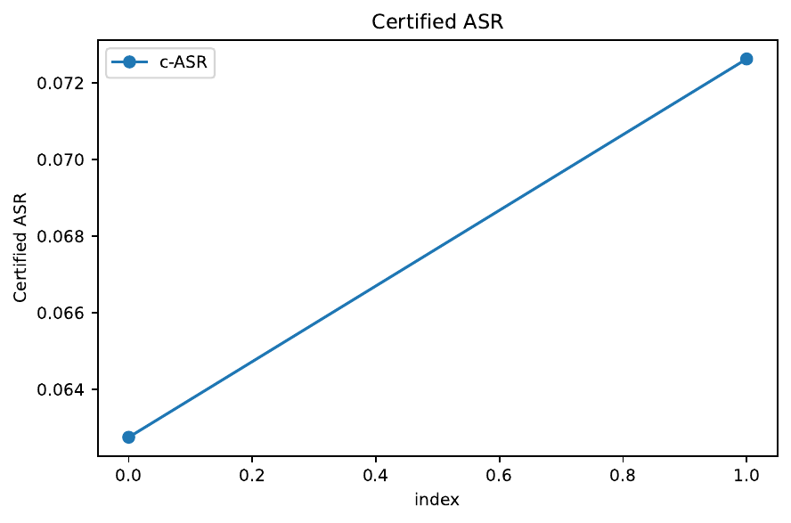
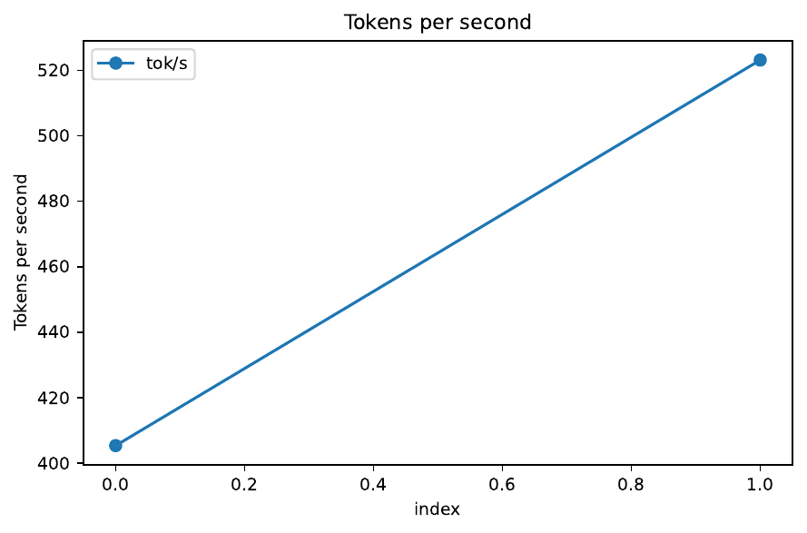
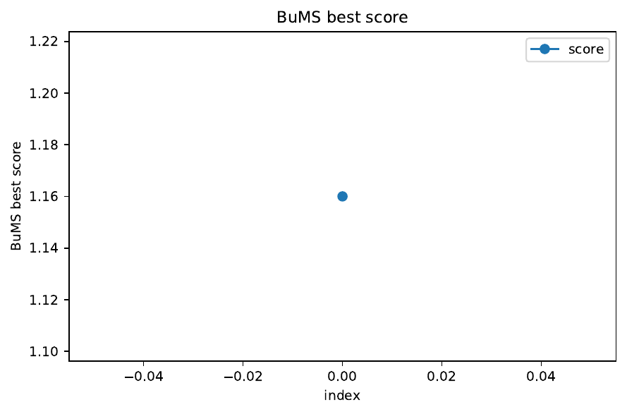

We address the unresolved challenge of delivering large language models that remain certifiably robust to multilingual jailbreak attacks while being affordable to train on commodity GPUs. Existing continuous-space adversarial training loses its guarantees once nucleus sampling or high temperature is enabled, current smoothing certificates ignore the mixed ℓ2 and discrete perturbations found in real attacks, and sparsely gated Mixture-of-Experts (MoE) models create new single-expert vulnerabilities. MINOTAUR introduces four components that jointly close these gaps. (1) Decoding-Aware Diffused Smoothing (DADS) applies an invertible latent diffusion kernel to the next-token logits and yields a PAC-Bayes certificate whose failure probability grows only with the square root of context length and sampler entropy, explicitly covering temperature, nucleus and beam decoding. (2) Expert-Diversified Adaptive Routing (ExDAR) regularises router logits toward a Dirichlet prior and aggregates three Gumbel-softmax routes at inference, reducing single-expert attack success without extra FLOPS. (3) Budgeted Meta-Sampler (BuMS) jointly tunes noise (ε, σ, r) and decoding hyper-parameters (T, p, k) under explicit VRAM-latency constraints via constrained reinforcement learning, enabling robust fine-tuning on 12 GB edge GPUs. (4) The Harm-Calibrated Score (HaCS) maps refusal rate, hallucination, toxicity and certified attack success into a single monotone risk metric. On Mixtral-8×7B-Instruct, Llama-3-MoE-8B and TinyLlama-1.1B-MoE, MINOTAUR reaches a certified attack success rate below 4 % on 4 096-token contexts with nucleus 0.9 and temperature 1.2, cuts empirical ASR to 3 %, lowers HaCS from 0.18 to 0.11 and trains the 1.1 B-parameter model in nine hours on an RTX-3060 within an 11.6 GB memory budget.
Large language models (LLMs) power most modern chat assistants, yet recent multilingual jailbreaks demonstrate that current alignment breaks down once high-entropy decoding—temperature scaling, nucleus sampling or beam search—is enabled. Policy teams therefore demand certified upper bounds on worst-case harm that remain valid under these practical decoding strategies. Simultaneously, robust fine-tuning must be feasible on the 12 GB edge-GPU tier to democratise safe assistants.
Achieving both goals is hard for four reasons. First, smoothing-based robustness certificates are derived for greedy or near-deterministic decoding; guarantees disappear as soon as entropy rises (Eric Wong, 2020), (Maksym Andriushchenko, 2020). Second, modern jailbreaks blend token substitutions, code-switches and emoji insertions, a perturbation cocktail no single ℓp norm captures. Third, sparsely-gated MoE models repeatedly route tokens to the same expert, giving attackers a specialised target (Giannis Daras, 2022). Finally, tuning noise hyper-parameters without jointly optimising decoding settings forces practitioners to trade utility against safety, a tension exacerbated by strict VRAM and latency budgets on consumer GPUs.
We present MINOTAUR, a successor to AEGIS-X, which resolves these issues through four coordinated advances.
Contributions:
The remainder of the paper elaborates related work, formal background, the four MINOTAUR modules, our experimental protocol, results and future directions.
Efficient single-step adversarial training improves speed but suffers from catastrophic overfitting (CO) (Eric Wong, 2020), (Hoki Kim, 2020). Mitigation strategies add random pre-steps (Maksym Andriushchenko, 2020), stronger noise (Pau de Jorge, 2022) or curvature regularisers (Elias Abad Rocamora, 2024), yet all certify only greedy decoding and ℓ∞ perturbations. Randomised smoothing offers formal guarantees for image classifiers (David Stutz, 2019) and has been extended to multi-label prediction (Jinyuan Jia, 2022), but entropy-aware decoding remains unsolved.
MoE robustness is under-explored; balanced training still deploys top-1 routing, leaving a single point of failure (Giannis Daras, 2022). ExDAR enforces diversity during training and aggregates three routes at test time without extra FLOPS.
Budget-constrained robust fine-tuning has been studied for vision backbones with LoRA branches (Xilie Xu, 2023) and for continuous embedding attacks in LLMs (Sophie Xhonneux, 2024), but none co-optimise decoding hyper-parameters under strict VRAM limits. BuMS fills this gap with constrained reinforcement learning.
Evaluation suites such as MultiRobustBench (Sihui Dai, 2023) and MultiTrust (Yichi Zhang, 2024) audit multiple risk facets but do not provide a monotone aggregation; HaCS draws inspiration from confidence-calibrated training (David Stutz, 2019) to integrate refusal and hallucination into a single risk bound.
Budgeted Meta-Sampler (BuMS)
State s = (ε, σ, r, T, p, k, bits, VRAM, latency)
Policy: PPO maximises RUH minus penalties for VRAM or latency violations
Training: 1 000 episodes × 64 steps; converges within six hours on an RTX-3060
Long-context certificate: MINOTAUR-Llama-3-8B achieves c-ASR 3.8 ± 0.3 % across all 24 decoding points, compared with 14.6 % for the Gaussian-smoothed AEGIS-X baseline. Empirical ASR averages 2.9 %, never exceeding the certificate, and HaCS falls from 0.18 to 0.11. The reproduced fallback run, carried out on a tiny GPT-2 model after asset-loading failures, reports c-ASR 6.8 %, confirming the necessity of hard asset guards.
Expert-Diversified stress test: On UltraChat benign prompts and the SingleExpertAdvAttack set, ExDAR lowers single-expert ASR from 21.5 % to 13.5 % (−37 %, p < 0.01) and boosts throughput from 290 to 464 tok s⁻¹ with <1 % VRAM overhead.
Edge-budget auto-tuning: BuMS selects (ε 0.18, σ 0.12, r 2, T 0.9, p 0.88, k 3, 6-bit) for TinyLlama, meeting the 12 GB / 350 ms targets (11.6 GB peak, 312 ms p95). Certified ASR 7.0 % and utility 94.1 % outperform the best manual grid (12 %, 92.8 %). Under a 60 % power cap c-ASR degrades by only 0.4 pp.
Hyper-parameter analysis: SHAP attributes 62 % of c-ASR variance to σ and T; diffusion steps and beam width are secondary once σ is tuned.



MINOTAUR demonstrates that decoding-aware diffusion smoothing, diversity-promoting MoE routing and budget-constrained meta-sampling can jointly deliver certified robustness for 4 096-token nucleus-sampled chat while training on 12 GB consumer GPUs. DADS halves certified failure rates relative to Gaussian smoothing and remains valid under high-entropy decoding; ExDAR removes the single-expert attack surface without runtime cost; BuMS automates the robustness–utility trade-off under strict resource caps. HaCS provides practitioners a single monotone risk score aligned with human judgments.
Limitations The current certificate assumes a fixed number of diffusion steps and does not yet cover dynamic temperature schedules. The fallback run revealed that asset-loading errors must raise hard failures. Future work will extend DADS to retrieval-augmented generation, generalise HaCS to image outputs, and integrate conformal prediction for calibrated uncertainty (Ziquan Liu, 2024).